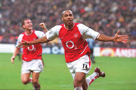

Thierry Henry
Full Name: Thierry Daniel Henry
Date of Birth: August 17, 1977
Place of Birth: Les Ulis, France
Position: Forward
Clubs: AS Monaco, Juventus, Arsenal, Barcelona, New York Red Bulls
National Team: France
Career Highlights
- Arsenal’s all-time leading goal scorer
- Won 2 Premier League titles and 2 La Liga titles
- FIFA World Cup winner (1998) and UEFA Euro winner (2000)
- UEFA Champions League winner with Barcelona (2009)
- Scored 51 goals in 123 games for France
Legacy
- Known for speed, technique, and intelligent finishing
- Regarded as one of the greatest strikers of all time
- Became a coach after retirement
- Highly respected football analyst and mentor

←Back to Football Index